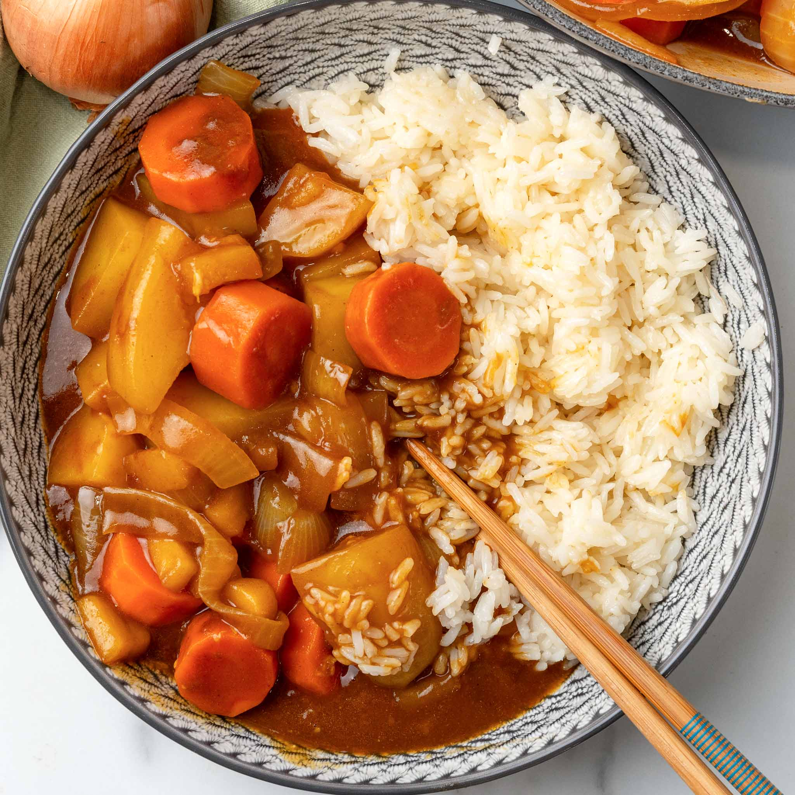

Curry Recipe

Description
This is a basic Japanese style curry recipe using only
veggies for the main contents of the curry. It will include
carrots, onions, and potatoes but will also work well if you
want to add about half a pound or so of any protein of your
choice. It will make around 5-6 portions.
This recipe also requires white rice for the curry to be served with so I will also recommend making around 2 cups of rice for it. This step will be included within the recipe. Curry can also be served with any noodles you desire such as Ramen, Udon, and Soba noodles. I would greatly recommend trying curry with some noodles it's one of my favorite dishes of all time.
Ingredients
- 3 Medium yellow potatoes
- 3 Large carrots
- 1 Whole white onion
- 3-4 Tablespoons of any cooking oil
- 1 A box of your favorite Japanese curry roux
- 2 Cups of rice
- 4 Cups of water
- Salt & pepper
- 1/2 lb Protein of your choice (optional)
Steps
- First start by rinsing the potatoes, carrots, and rice under cold water. Get most of the dirt off of the carrots and potatoes. Wash the rice until the water runs clean and set aside
- Next we can peel the potatoes, carrots, and onion.
- For the potatoes start by cutting them in half length wise then cut each half in half again. Slice them into thin pieces around a quarter of an inch in thickness. For the carrots cut as you normally would to ensure all the pieces have about the same mass to let them cook evenly. Next the onion can be cut in half and sliced into strips. If you decided to add protein such as chicken it can be cut into cubes around 1 inch thick. (Be sure use seperate cutting boards for Vegetables and meat to prevent cross contamination)
- In a medium sized pot heat to around medium temperature and add oil. Once it reaches temperature add the onions and carrots, with salt and pepper to taste, and cook for around 5-6 minutes then add the potatoes, with more salt and paper for the potatoes to taste. Continue to cook for another 5-6 minutes until onions are slightly translucent and potatoes slightly fried. If you were using meat for the recipe add it first and cook until slightly undercooked then add the rest of the veggies to prevent burning the meat.
- After the vegetables have cooked add enough water to the pot to just barely cover them. Then cover the pot and let simmer for around 12-15 minutes or until the potatoes are soft. At around the same time you can add the rice to a rice cooker with 4 cups of water and set it to cook.
- Once the potatoes are soft you can add the curry roux while stirring constantly to make sure it all breaks down. Keep stirring gently for around 7-8 minutes with the heat on low until the curry becomes fully integrated.
- Finally serve with rice and you're done! You can also add fukujinzuke (pickled japanese radish) on top for a delicious combination of flavors.
Home